目的：实现机关和事业单位的人事管理信息系统。
软件使用的对象：面向机关和事业单位内人事信息管理人员和在职开发人员。
【架构选型】
vhr面向的群体范围并不大，并非属于互联网应用，所以市面上鼓吹的高并发，高性能对于这个项目来说并不适用。
盲目上微服务只会徒增成本。
1.管理员对员工信息的操作
首先，管理人员登陆进入系统，对员工信息进行增删改查，进而对奖罚、工资、考评等信息进行增删改查，然后实现对部门员工部分信息的统计及修改
2.操作员对自己信息的操作
可对自己的信息进行操作
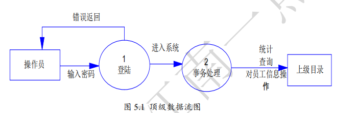
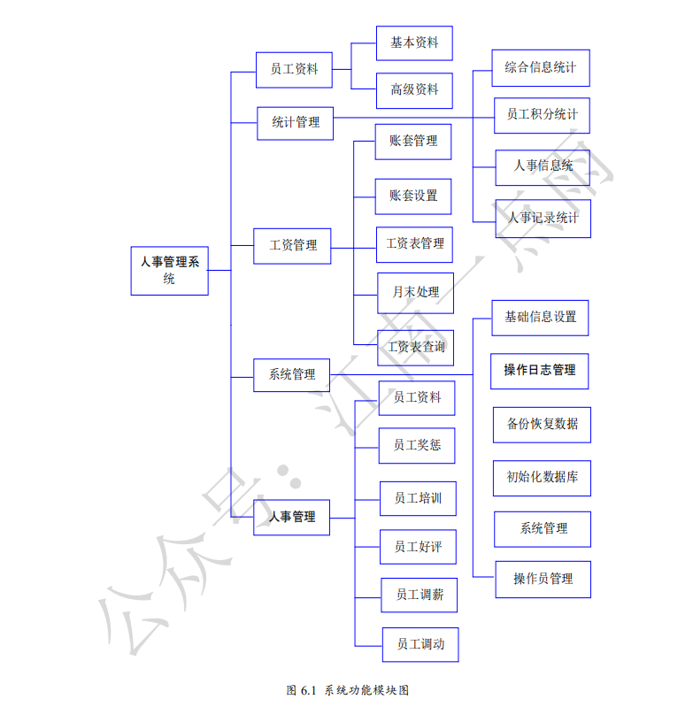
员工资料包括基本资料和高级资料。
基本资料
员工编号、员工姓名、性别、出生日期、身份证号、婚姻状况、名族、机关、政治面貌、电子邮箱、联系电话、联系地址、部门、职位、职称、基本工资、聘用形式、最高学历、所属专业、毕业院校、入职日期、在职状态、工号、合同期限。
高级资料
(1). 奖惩资料：奖惩日期、奖惩分数、奖惩原因。
(2). 培训资料：培训日期、培训内容。
(3). 考评资料：考评日期、考评内容、考评结果。
(4). 调薪资料：调薪日期、调前薪资、调后薪资、调薪原因。
(5). 调动资料：调动日期、调前部门、调前职位、调动原因、调后部门、调后职位、备注。
(6). 工资信息：账套名称、工资月份、应发工资、备注。
(7). 其他信息：管理员可任意备注其他信息。
主要用于对员工奖惩、培训、考评、调薪、调动、工资信息的管理。
1.员工资料
即员工的基本资料，显示员工资料，并且可对员工进行模糊查询，即实现员工资料的增删改查。
2.员工奖惩
对员工奖励模块的增删改查的实现。
3.员工培训
对员工培训模块的增删改查的实现。
4.员工好评
对员工好评模块的增删改查的实现。
5.员工调薪
对员工调薪模块的增删改查的实现。
6.员工调动
对员工调动模块的增删改查的实现。
实现对员工工资账套管理、员工账套设置、工资表管理、月末处理、工资表查询一系列对员工工资管理的功能。
1 工资账套管理
对员工奖金、基本工资、提成等各项的增删改查。
2 员工账套设置
根据公司账套（即各部门），查看相应的员工的工资信息，并实现其增删功能。
3 工资表管理
集中对同一部门员工工资进行增删改查的功能。
4 月末处理
对该月该部门员工工资进行增删改查的功能。
5 工资表查询
是一种历史记录查询，可查询某员工在某月的工资情况。
对员工资料的统一查询管理，包括综合信息统计、员工积分统计、人事信息统、人事记录统计。
1 综合信息统计
根据员工出生月份、转正信息等统一管理。
2 员工积分统计
根据日期查找员工的积分情况。
3 人事信息统计
对员工进行的同一查询管理，可根据性别、工资、职称等查询员工的信息。
4 人事记录统计
对员工积分的统一管理，可根据部门、月份等查询其积分信息。
对系统、管理员等一些操作，包括基础信息设置、系统管理、操作员管理、备份恢复数据、初始化数据库。
1 基础信息设置
对部门、职位、职称、奖惩规则和权限组的设置管理，及其个项目的增删改查。
2 系统管理
对系统本身的一些设置。
3 操作日志管理
记录管理员对数据的操作信息。
4 操作员管理
管理员基本信息的管理，及其增删改功能。
5 备份恢复数据
可对员工资料数据进行备份，并在适当的时候还原。
6 初始化数据库
对整个数据库资料初始化的操作。
vhr系统使用者大致可分为两类，一种是系统管理员，另外一种是拥有各种权限的hr员工。
vhr一共有21张表，其中核心的五张表：
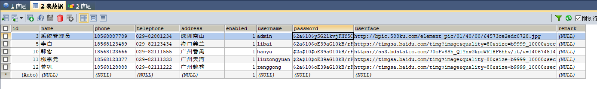
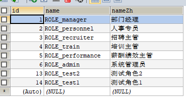
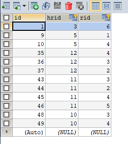
前面三张表定义了vhr使用的对象及所拥有的权限，
比如hr中第一个id为3的系统管理员对于用户角色关联表中rid为6，而6在role表中对应的是系统管理员权限。
下面两张菜单表和菜单角色关联表定义了角色具体拥有的权限。
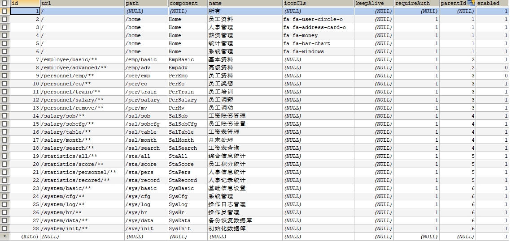
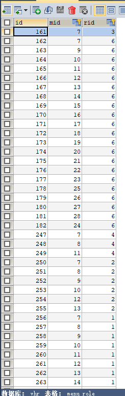
这两张表需要结合role表来分析，还是以hr表中id为3的用户举例，在menu_role中rid为3对应的mid为7，7在menu表中的访问内容只有基本资料，那么这个用户可能是个普通员工。以此类推，作者在文档里画了一个图非常形象生动的诠释了这五张表的关系：
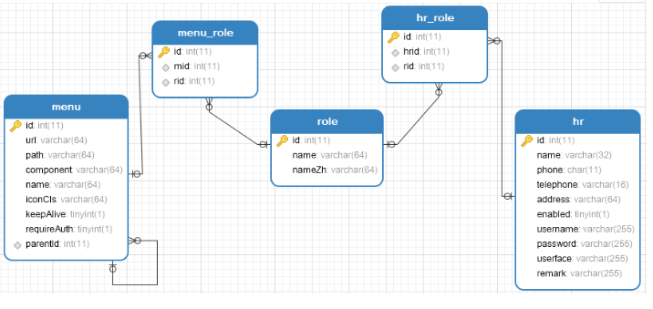
剩下的表在往下看功能的时候再慢慢了解吧。
不知道面对整个项目该如何下手，还好在图书馆借了SpringBoot+Vue的书，实战介绍完数据库就到登录模块了。
在没有思路的时候，姑且先从这里开始吧。
在研究登录模块之前，当然是先把程序跑起来先。
clone，然后用IDEA打开。
首先建库，把vhr.sql在MySQL里创建出来。【MySQL版本：8.0】
出于个人习惯，
将properties改为yaml，
SpringBoot版本换到了2.1.8，
Druid版本换到了1.1.20，顺带配置Druid监控。
spring:
datasource:
# 数据源基本配置
username: noneplus
password: Noneplus564925080!
driver-class-name: com.mysql.cj.jdbc.Driver
url: jdbc:mysql://xx.xxx.xxx.xx:3306/vhr?serverTimezone=UTC
type: com.alibaba.druid.pool.DruidDataSource
# Druid数据源配置
initialSize: 5
minIdle: 5
maxActive: 20
maxWait: 60000
timeBetweenEvictionRunsMillis: 60000
minEvictableIdleTimeMillis: 300000
validationQuery: SELECT 1 FROM DUAL
testWhileIdle: true
testOnBorrow: false
testOnReturn: false
poolPreparedStatements: true
# 配置监控统计拦截的filters，去掉后监控界面sql无法统计，'wall'用于防火墙
filters: stat,wall,log4j
maxPoolPreparedStatementPerConnectionSize: 20
useGlobalDataSourceStat: true
connectionProperties: druid.stat.mergeSql=true;druid.stat.slowSqlMillis=500
mail:
host: smtp.qq.com
port: 465
username: 1510161612@qq.com
password: fhmvfkwxjwmzhhjd
default-encoding: UTF-8
properties:
mail:
debug: true
stmp:
socketFactory:
class: javax.net.ssl.SSLSocketFactory
pagehelper:
helperDialect: mysql
reasonable: true
supportMethodsArguments: true
pageSizeZero: false
server:
port: 8082
######################################################################################
# 原application.properties
##MySQL配置
# spring.datasource.type=com.alibaba.druid.pool.DruidDataSource
# spring.datasource.url=jdbc:mysql://47.103.6.247:3306/vhr?useUnicode=true&characterEncoding=UTF-8
# spring.datasource.username=noneplus
# spring.datasource.password=Noneplus564925080!
# #MyBatis日志配置
# mybatis.config-location=classpath:/mybatis-config.xml
# #Redis配置
# spring.redis.database=0
# spring.redis.host=192.168.66.130
# spring.redis.port=6379
# spring.redis.password=123@456
# spring.redis.jedis.pool.max-active=8
# spring.redis.jedis.pool.max-idle=8
# spring.redis.jedis.pool.max-wait=-1ms
# spring.redis.jedis.pool.min-idle=0
# #缓存配置
# spring.cache.cache-names=menus_cache
# spring.cache.redis.time-to-live=1800s
# #端口配置
# server.port=8082
#
# spring.mail.host=smtp.qq.com
# spring.mail.port=465
# spring.mail.username=1510161612@qq.com
# spring.mail.password=fhmvfkwxjwmzhhjd
# spring.mail.default-encoding=UTF-8
# spring.mail.properties.mail.smtp.socketFactory.class=javax.net.ssl.SSLSocketFactory
# spring.mail.properties.mail.debug=true<parent>
<groupId>org.springframework.boot</groupId>
<artifactId>spring-boot-starter-parent</artifactId>
<version>2.1.8.RELEASE</version>
<relativePath/> <!-- lookup parent from repository -->
</parent>
<dependency>
<groupId>com.alibaba</groupId>
<artifactId>druid</artifactId>
<version>1.1.20</version>
</dependency>配置DruidConfig监控
在config包下新增一个DruidConfig
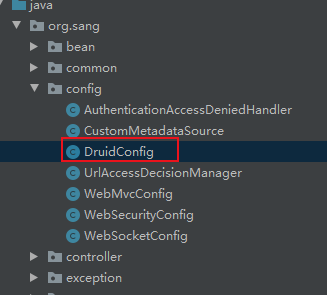
package org.sang.config;
import com.alibaba.druid.pool.DruidDataSource;
import com.alibaba.druid.support.http.StatViewServlet;
import com.alibaba.druid.support.http.WebStatFilter;
import org.springframework.boot.context.properties.ConfigurationProperties;
import org.springframework.boot.web.servlet.FilterRegistrationBean;
import org.springframework.boot.web.servlet.ServletRegistrationBean;
import org.springframework.context.annotation.Bean;
import org.springframework.context.annotation.Configuration;
import javax.sql.DataSource;
import java.util.Arrays;
import java.util.HashMap;
import java.util.Map;
@Configuration
public class DruidConfig {
//加载application.yaml中的Druid配置
@ConfigurationProperties(prefix = "spring.datasource")
@Bean
public DataSource druid(){
return new DruidDataSource();
}
//配置Druid的监控
//1、配置一个管理后台的Servlet
@Bean
public ServletRegistrationBean statViewServlet(){
ServletRegistrationBean bean = new ServletRegistrationBean(new StatViewServlet(), "/druid/*");
Map<String,String> initParams = new HashMap<>();
initParams.put("loginUsername","hq");
initParams.put("loginPassword","564925080");
initParams.put("allow","");//默认就是允许所有访问
initParams.put("deny","192.168.15.21");
bean.setInitParameters(initParams);
return bean;
}
//2、配置一个web监控的filter
@Bean
public FilterRegistrationBean webStatFilter(){
FilterRegistrationBean bean = new FilterRegistrationBean();
bean.setFilter(new WebStatFilter());
Map<String,String> initParams = new HashMap<>();
initParams.put("exclusions","*.js,*.css,/druid/*");
bean.setInitParameters(initParams);
bean.setUrlPatterns(Arrays.asList("/*"));
return bean;
}
}配置Druid监控，还需要配置log4j依赖
<dependency>
<groupId>log4j</groupId>
<artifactId>log4j</artifactId>
<version>1.2.17</version>
</dependency>log4j.properties【配置在resource路径下】
# Configure logging for testing: optionally with log file
log4j.rootLogger=WARN, stdout
# log4j.rootLogger=WARN, stdout, logfile
log4j.appender.stdout=org.apache.log4j.ConsoleAppender
log4j.appender.stdout.layout=org.apache.log4j.PatternLayout
log4j.appender.stdout.layout.ConversionPattern=%d %p [%c] - %m%n
log4j.appender.logfile=org.apache.log4j.FileAppender
log4j.appender.logfile.File=target/spring.log
log4j.appender.logfile.layout=org.apache.log4j.PatternLayout
log4j.appender.logfile.layout.ConversionPattern=%d %p [%c] - %m%n访问：http://localhost:8082/index.html#/
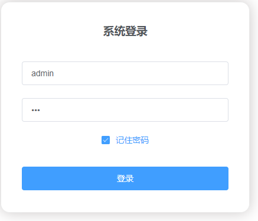
测试Druid监控，访问：http://localhost:8082/druid/
【注：访问Druid监控之前需要先登录获取权限，之后再访问Druid】
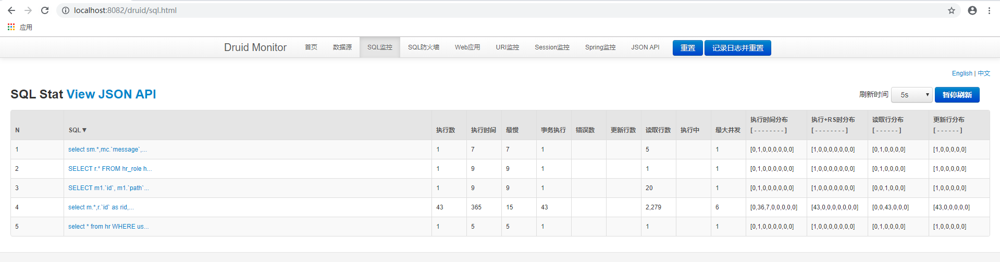
【tips：后续会更新代码，为了方便测试，会打下不同的节点】
https://github.com/Noneplus/vhr/releases/tag/v1.0
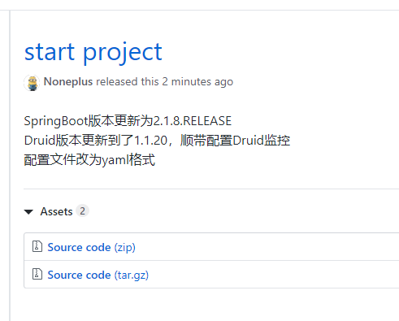